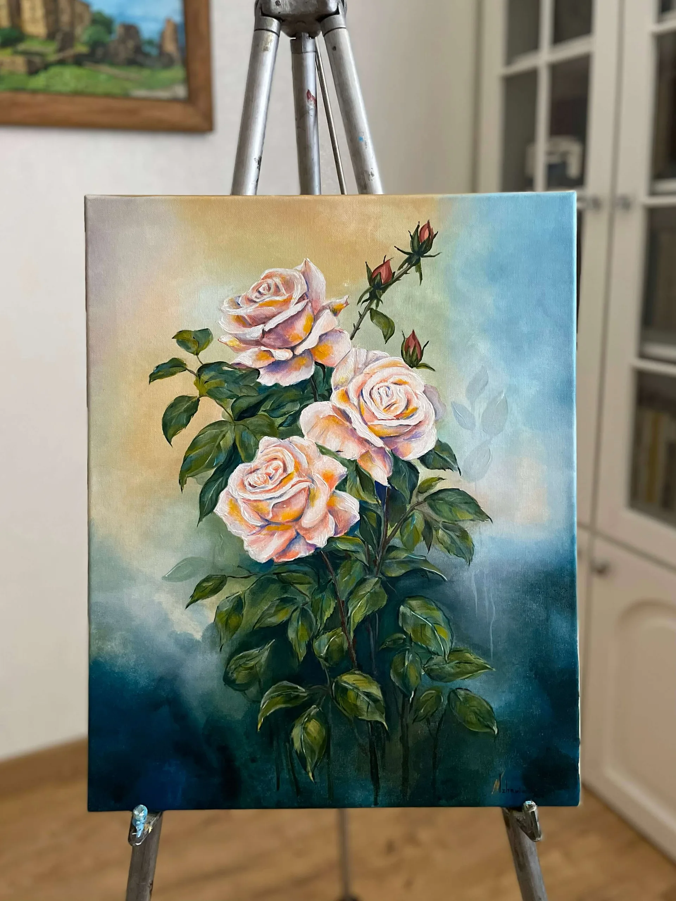
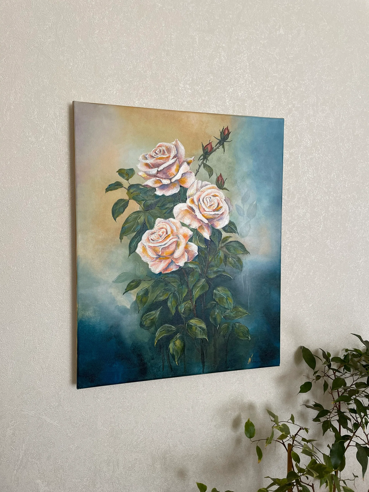
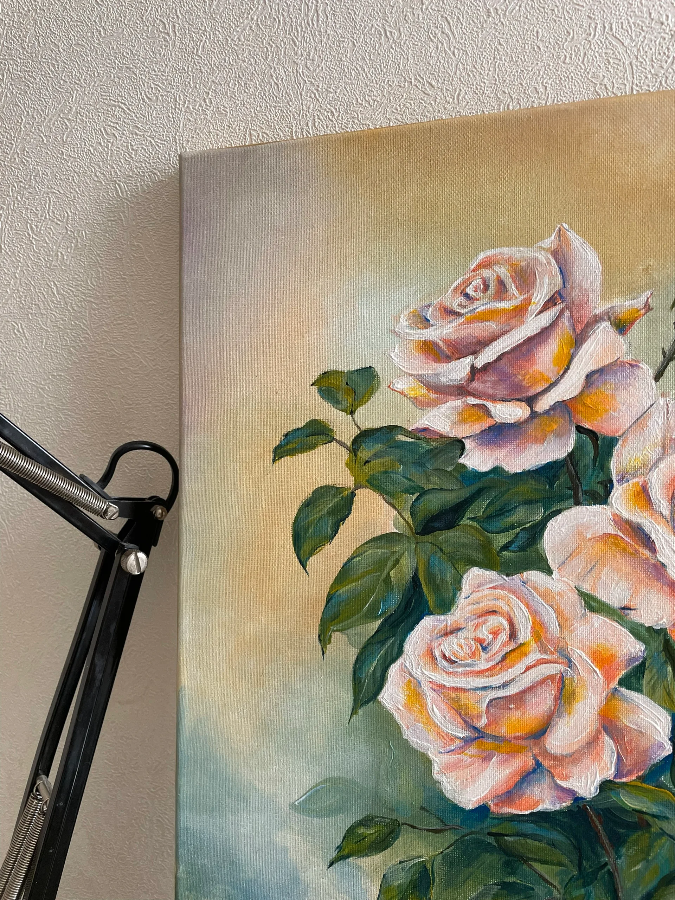
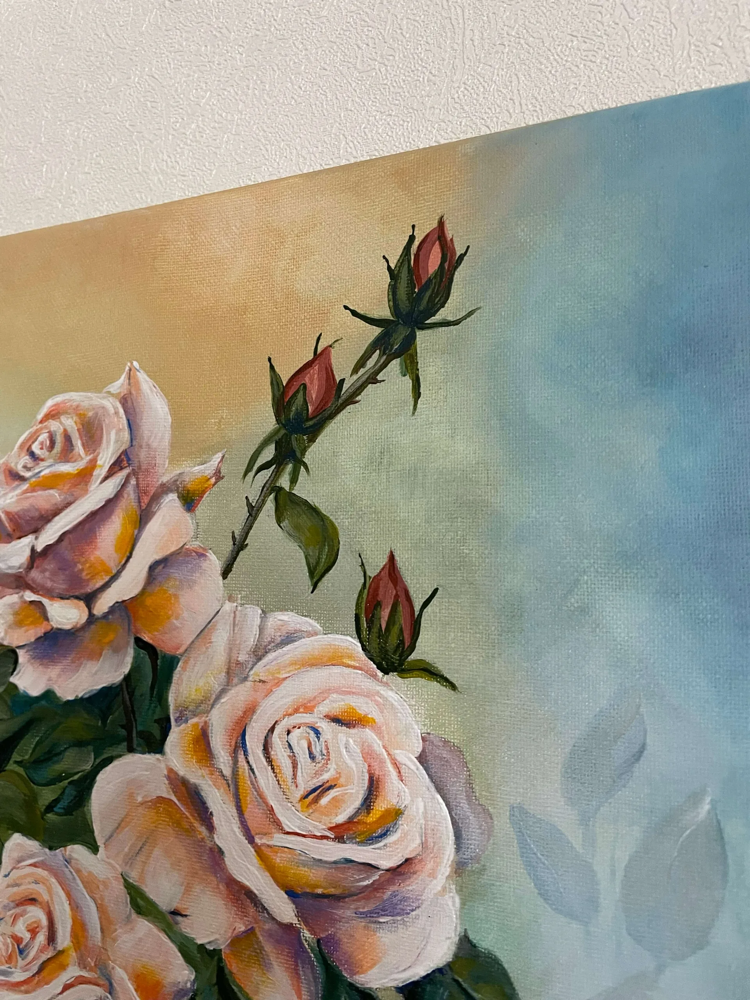
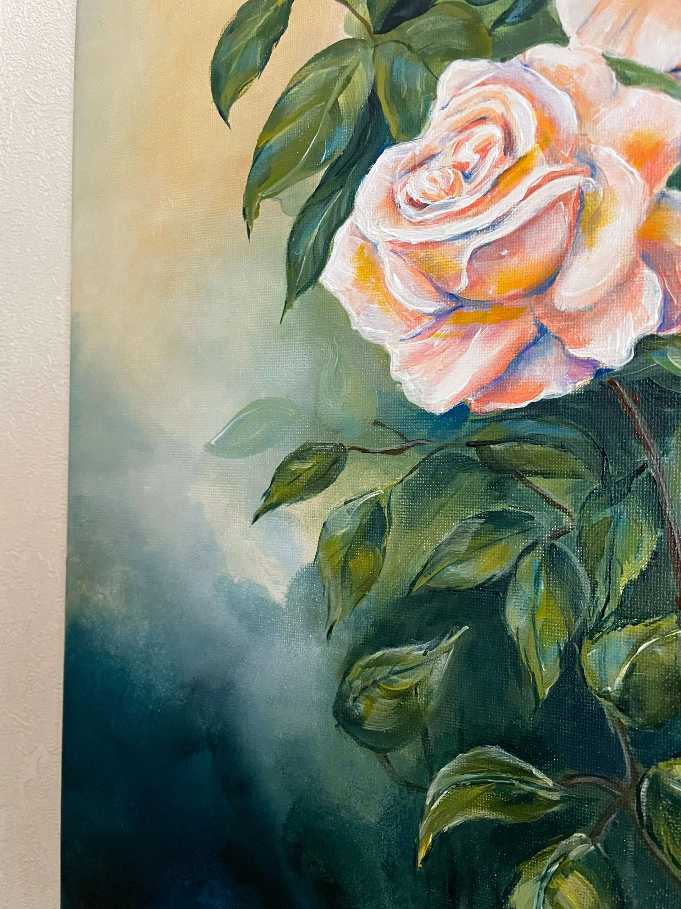
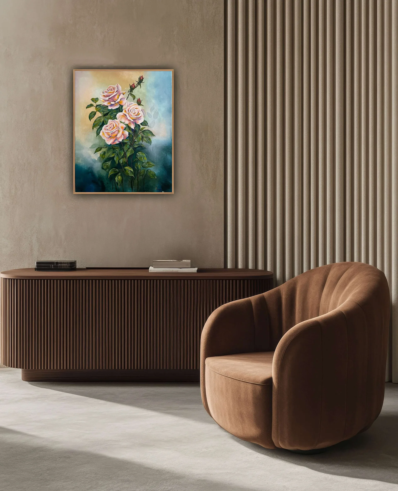
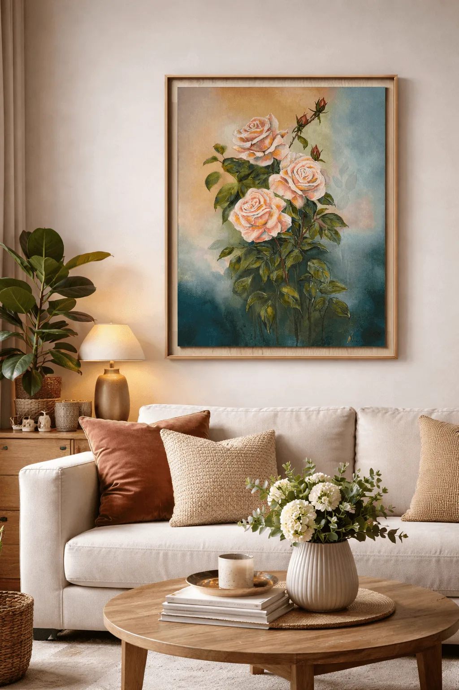
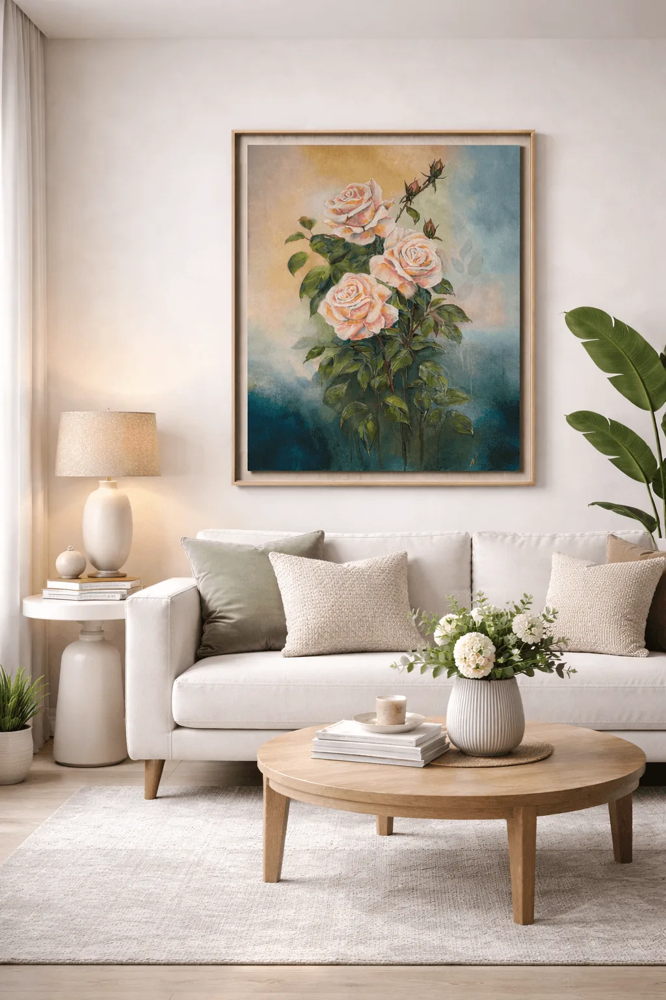

Featured Project
Roseslover
A tender rose composition in warm pastel tones and romantic elegance.
ეს ნამუშევარი ასახავს ვარდების ნაზ კომპოზიციას, სადაც სამი გაშლილი ყვავილი და კვირტები ბუნებრივ ჰარმონიას ქმნის. თბილი პასტელური ტონები კომპოზიციას სინაზესა და სინათლის ეფექტს მატებს. რბილი, გადამავალი ფონური ფერები აძლიერებს სიმშვიდის განცდას და უსვამს ხაზს ყვავილების ელეგანტურობას. ეს ნახატი იდეალურად ერგება თანამედროვე და რომანტიკულ ინტერიერს, სადაც ბუნებრივი დეტალები სივრცეს სითბოს მატებს.
This artwork presents a delicate rose composition, where three blooming flowers and gentle buds create a natural sense of harmony. Warm pastel tones add softness and a subtle glow to the overall piece. The smoothly blended background enhances the calm atmosphere and highlights the elegance of the flowers. This painting is a perfect fit for modern and romantic interiors, bringing warmth and beauty into any space.

Medium
Acrylic on canvas
Size
40 × 50 cm
Year
2025
Category
Floral
More photos







